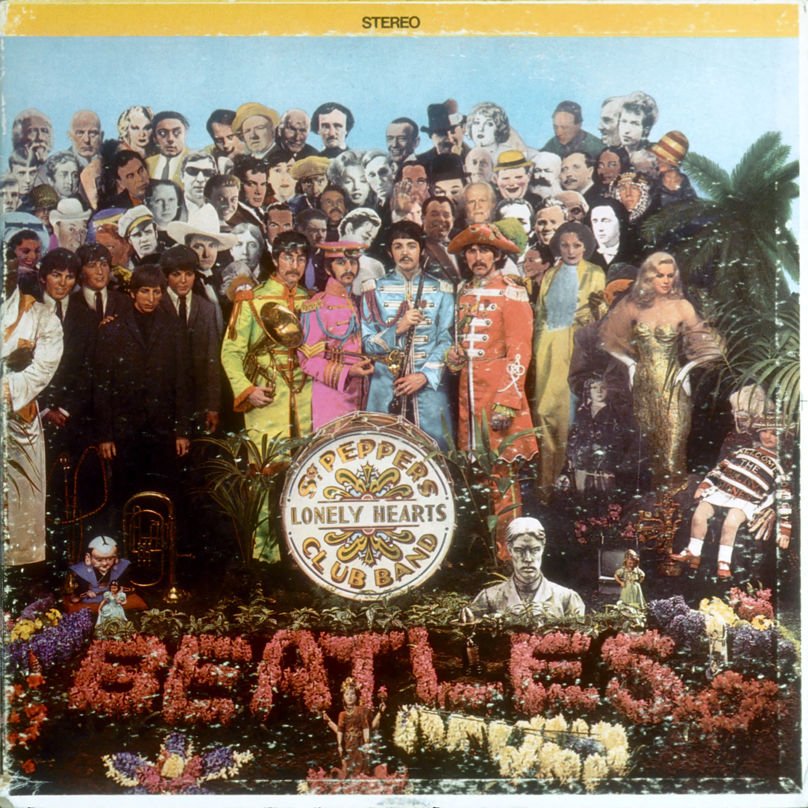

Sgt. Pepper's Lonely Hearts Club Band (1967)
What is there to say that hasn't been said of Sgt. Pepper's? Sgt. Pepper's Lonely Hearts Clubs Band embodies grandiosity in its album cover and sound and rightfully holds the title for maybe the most influential of all time. Incorporating all flavors of music, the project is and was a cultural landmark in its widespread appeal. From its tacky-yet-effective opener to Day In The Life, inarguably one of the greatest songs of all time, the album sets an uncrossable bar in songwriting and composition throughout. Other standouts include Lucy In The Sky With Diamonds, the cute When I'm Sixty Four, and Getting Better, while not my favorite Beatles album, its an amazing record that defines the quartet.
Sgt. Pepper's Lonely Hearts Club Band - 2:02
With A Little Help From My Friends - 2:44
Lucy In The Sky With Diamonds - 3:28
Getting Better - 2:48
Fixing A Hole - 2:36
She's Leaving Home - 3:35
Being For The Benefit Of Mr. Kite! - 2:37
Within You Without You - 5:04
When I'm Sixty Four - 2:37
Lovely Rita - 2:42
Good Morning Good Morning - 2:41
Sgt. Pepper's Lonely Hearts Club Band - Reprise / - 1:19
A Day In The Life - 5:37